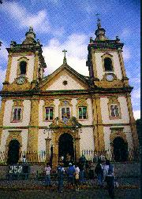
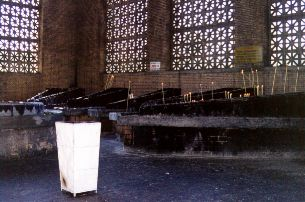
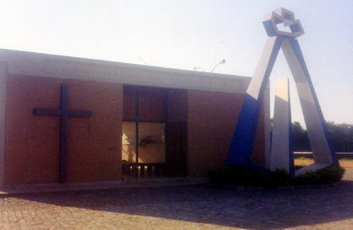

 UM
RÚSTICO ALTAR - Silvana uniu a
Cabeça ao Corpo da imagem com cera comum e conservou-a
cuidadosamente por quase 10 anos, mantendo-a num pequeno altar na
sala de sua casa, onde ela, os parentes, amigos e vizinhos,
faziam orações e rezavam o Terço. Na realidade, as duas partes
só ficaram perfeitamente soldadas em 1946, quando um
especialista uniu-as com um pino de ouro e completou o acabamento
externo.
UM
RÚSTICO ALTAR - Silvana uniu a
Cabeça ao Corpo da imagem com cera comum e conservou-a
cuidadosamente por quase 10 anos, mantendo-a num pequeno altar na
sala de sua casa, onde ela, os parentes, amigos e vizinhos,
faziam orações e rezavam o Terço. Na realidade, as duas partes
só ficaram perfeitamente soldadas em 1946, quando um
especialista uniu-as com um pino de ouro e completou o acabamento
externo.
 ORATÓRIO
DO ATANÁSIO - Por volta de
1726, quando Domingos e João Alves já tinham morrido e também
faleceu Silvana, Felipe Pedroso o único sobrevivente, guardou a
imagem. Primeiro residiu em terras de Lourenço de Sá, depois
mudou-se para Ponte Alta e finalmente fixou residência no porto
de Itaguaçú, onde em 1739 veio a falecer. Contudo, ainda em
vida, confiou a imagem ao seu filho Atanásio Pedroso, que
construiu no quintal de sua casa um pequeno e tosco oratório de
madeira, onde a colocou. Ali, aos pés daquele humilde trono, aos
sábados congregavam-se os parentes e o povo da cercania,
derramando preces e modulando canções, testemunhando desta
forma, a fé simples, mas sincera e ardorosa. Aquele foi o
primeiro trono da VIRGEM APARECIDA e onde Ela
começou a irradiar o seu amor e carinho, para todos que com fé
e esperança, procuravam encontrar DEUS através de sua
maternal proteção. E dessa maneira, ali, no porto de
Itaguaçú, a imagem voltava, por assim dizer, ao local de
origem, onde foi retirada das águas do Paraíba.
ORATÓRIO
DO ATANÁSIO - Por volta de
1726, quando Domingos e João Alves já tinham morrido e também
faleceu Silvana, Felipe Pedroso o único sobrevivente, guardou a
imagem. Primeiro residiu em terras de Lourenço de Sá, depois
mudou-se para Ponte Alta e finalmente fixou residência no porto
de Itaguaçú, onde em 1739 veio a falecer. Contudo, ainda em
vida, confiou a imagem ao seu filho Atanásio Pedroso, que
construiu no quintal de sua casa um pequeno e tosco oratório de
madeira, onde a colocou. Ali, aos pés daquele humilde trono, aos
sábados congregavam-se os parentes e o povo da cercania,
derramando preces e modulando canções, testemunhando desta
forma, a fé simples, mas sincera e ardorosa. Aquele foi o
primeiro trono da VIRGEM APARECIDA e onde Ela
começou a irradiar o seu amor e carinho, para todos que com fé
e esperança, procuravam encontrar DEUS através de sua
maternal proteção. E dessa maneira, ali, no porto de
Itaguaçú, a imagem voltava, por assim dizer, ao local de
origem, onde foi retirada das águas do Paraíba.
Nos anos que decorreram entre o encontro da imagem até a sua colocação naquele Oratório, nada de muito extraordinário foi constatado além da notável pescaria, a não ser os depoimentos de algumas pessoas que ouviram diversas vezes estranhos ruídos, como se fossem estrondos, dentro do baú onde a imagem estava guardada, como diziam: "parecia que ela não queria ficar lá dentro".

Todavia, foi mesmo no seu pequeno trono em Itaguaçú que começou a demonstrar a grandeza de seu ilimitado amor! Logo que recebeu as primeiras súplicas solicitando o seu Divino auxílio, NOSSA SENHORA respondeu manifestando decididamente com prodígios notáveis, permitindo que as notícias circulassem com rapidez e chegassem ao conhecimento do Padre José Alves Vilela, que era o Pároco da Igreja Matriz em Guaratinguetá. Foi assim que ele ficou sabendo dos fatos, desde o achado da imagem até os últimos acontecimentos. Decidiu mandar o sacristão, senhor João Potiguá, assistir as rezas e observar o que estava ocorrendo. E com grande surpresa e satisfação o auxiliar do sacerdote constatou a realidade que ocorria e posteriormente, descreveu para o prelado toda a verdade. Dessa forma, o Padre decidiu colecionar os depoimentos das pessoas, montando toda a história da pesca milagrosa com os fatos extraordinários que aconteceram e as diversas curas milagrosas, e colocou tudo num livro que escreveu e guardou zelosamente para a posterioridade.
 CAPELINHA
DO PADRE VILELA - Com a ajuda
popular, edificou uma Capelinha ao lado da casa de Atanásio, a
fim de que todas as pessoas tivessem livre acesso à imagem. Era
uma Capelinha de pau a pique que logo ficou pequena, em face da
grande afluência de fieis, tornando-se incapaz de abrigar tantas
pessoas, em face do notável crescimento da devoção a NOSSA
SENHORA APARECIDA. Era preciso construir outra Capela, bem
maior e num local mais adequado.
CAPELINHA
DO PADRE VILELA - Com a ajuda
popular, edificou uma Capelinha ao lado da casa de Atanásio, a
fim de que todas as pessoas tivessem livre acesso à imagem. Era
uma Capelinha de pau a pique que logo ficou pequena, em face da
grande afluência de fieis, tornando-se incapaz de abrigar tantas
pessoas, em face do notável crescimento da devoção a NOSSA
SENHORA APARECIDA. Era preciso construir outra Capela, bem
maior e num local mais adequado.
No dia 5 de Maio de 1743, Padre
Vilela pediu ao senhor Bispo Dom Frei João da Cruz, autorização
para a construção de uma Capela maior, com espaço suficiente a
receber um grande número de fieis que acorriam de maneira
admirável, para rezar diante de NOSSA SENHORA. A
solicitação foi concedida e a obra foi executada em ritmo
acelerado, sendo inaugurada no dia 26 de Julho de 1745, dois anos
após a concessão da autorização diocesana. Era uma bonita
Igreja feita com taipa e pilão, no Morro dos Coqueiros, local
alto e agradável, com muito espaço e uma linda visão do Vale 
 IGREJA
VELHA - Entre os anos de 1883 a
1888, esta Capela Maior foi ampliada e reformada, sempre com o
objetivo de melhor atender a afluência de fieis, cada vez mais
crescente e fervorosa. Aquela Capela é a atual Igreja Velha de NOSSA
SENHORA APARECIDA, também denominada Basílica Velha,
situada do outro lado da passarela monumental, em contínua
atividade até hoje.
IGREJA
VELHA - Entre os anos de 1883 a
1888, esta Capela Maior foi ampliada e reformada, sempre com o
objetivo de melhor atender a afluência de fieis, cada vez mais
crescente e fervorosa. Aquela Capela é a atual Igreja Velha de NOSSA
SENHORA APARECIDA, também denominada Basílica Velha,
situada do outro lado da passarela monumental, em contínua
atividade até hoje.
Capela construída no Porto de Itaguaçú